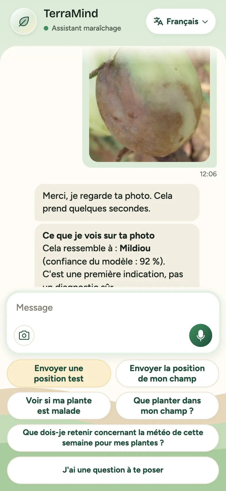

Le conseiller agricole dans la poche des maraîchers des Niayes
Le maraîcher envoie à TerraMind la position de son champ, puis la photo d'une plante malade ou une question. Selon sa demande, TerraMind lui dit quoi planter, quel risque la météo annonce, ou quelle est cette maladie et que faire. Il répond en français ou en wolof à l'oral, et cite à chaque fois le document d'où vient sa réponse.
L'équipe étudie à l'ENSAE Dakar (École nationale de la statistique et de l'analyse économique)
AK
Alioune Abdou Salam KaneChef de projet, responsable du moteur, du bot Telegram et de la conception de l'application mobile
JK
Judicaël Oscar KafandoResponsable de la collecte des données et de l'entraînement des modèles
NF
Ndeye Ramatoulaye Ndoye FallResponsable du contenu agricole, du wolof et du pitch
Comment essayer le produit TerraMind ?
Il y a trois façons de le faire, au choix. Chaque code QR correspond à une plateforme où TerraMind est disponible : scannez donc le code QR de la plateforme sur laquelle vous voulez tester TerraMind (ou cliquez sur son lien).
1. Le bot Telegram conseilléIl faut un compte Telegram.
t.me/TerraMindAfriqueBot
2. L'application en ligneRien à installer, ordinateur ou téléphone.
Pour tester TerraMind : voir la page 4, où nous avons préparé un parcours de test sur le bot Telegram, en français puis en wolof, avec ce qu'il faut faire étape par étape.
01Contexte et problème
Les Niayes, de Dakar à Saint-Louis, sont la grande zone de maraîchage du Sénégal. On y cultive surtout la tomate, l'oignon, le chou et la pomme de terre. Un petit maraîcher, lorsqu'il décide de cultiver son champ, y décide seul deux choses qui font sa récolte : quoi planter sur son sol, et à quelle saison. En plus de cela, il doit surveiller ses plantes pour qu'elles ne tombent pas malades, c'est-à-dire prévenir les maladies qui arrivent avec l'humidité, et retirer très vite les plantes malades, avant qu'elles ne contaminent toute la récolte. Si c'est mal fait, toute la récolte peut être perdue : une grosse perte d'argent pour l'agriculteur.
Or, ces maraîchers font tous ces choix presque sans aide. En effet, selon les chiffres officiels, la plupart d'entre eux ne sont jamais allés à l'école, les insectes et autres bêtes qui mangent les cultures arrivent plus nombreux que d'habitude, et les insecticides sont utilisés sans conseil.
71 %
des producteurs de légumes, de fruits et de fleurs des Niayes n'ont aucun niveau d'instruction : un conseil écrit et technique ne leur parle pas.
43,9 %
des ménages agricoles de Louga (20,6 % à Thiès) ont eu bien plus de bêtes qui mangent les cultures que d'habitude (15,3 % dans tout le pays).
99 %
des parcelles de chou reçoivent des insecticides (78 % pour l'oignon), souvent sans conseil sur le bon moment.
Sources : Direction de l'Horticulture, recensement des Niayes (données 2012) ; DAPSA, Enquête agricole annuelle 2022-2023.
TerraMind · PAS Challenge 20261 / 5
02Solution et valeur ajoutée
TerraMind aide donc le maraîcher à faire des choix pour mieux cultiver son propre champ, en se basant sur son sol, la météo de sa zone et les plantes qu'il cultive. Il propose ainsi quatre services :
Conseiller au maraîcher ce qu'il faut planter
TerraMind demande la localisation du champ, puis regarde son sol et la saison pour conseiller au maraîcher ce qu'il faut planter, en se basant sur les recommandations d'instituts agricoles reconnus, comme l'ISRA au Sénégal.
Informer le maraîcher des risques météo sur son champ
Il regarde la météo des derniers jours dans la zone du champ et prévient le maraîcher si elle favorise des maladies ou des insectes qui abîment ses plantes.
Vérifier par la photo si les plantes du maraîcher sont malades
Le maraîcher prend une photo de ce qui pose problème sur sa plante. TerraMind possède un modèle de reconnaissance d'images, entraîné pour faire un diagnostic et dire si la plante est malade ou pas.
Répondre à des questions sur le maraîchage
Le maraîcher écrit sa question dans l'application ou au bot Telegram, ou la dit en message vocal, en wolof. TerraMind lui répond en se basant sur les sources agricoles vérifiées que nous avons rassemblées.
Voici à quoi ressemble l'application
Accueil
Que planter

Diagnostic photo
En wolof, à écouter
Ce qui rend TerraMind différent
On n'invente rien. Chaque conseil a une source sûre, par exemple l'ISRA au Sénégal ou la FAO, et ces sources ont été vérifiées par un vérificateur indépendant.
TerraMind sait dire « je ne suis pas sûr ». Quand TerraMind fait un diagnostic de la plante par la photo, si son pourcentage de confiance est inférieur à 60 %, il fait savoir qu'il n'est pas sûr et demande au maraîcher de prendre une nouvelle photo.
TerraMind ne conseille jamais de produit chimique. Appliquer le mauvais produit chimique, ou en mauvaise quantité, peut tuer la plante du maraîcher. Quand la plante a besoin d'un produit chimique, TerraMind oriente le maraîcher vers un agent agricole.
TerraMind sait discuter en wolof. La plupart des agriculteurs ne parlent pas le français : TerraMind discute donc avec eux en wolof, grâce à Octopus, qui fournit des modèles pour parler et comprendre le wolof.
03Utilisateurs cibles et cas d'usage
TerraMind est un conseiller agricole pour les maraîchers. Dans le cadre du PAS Challenge, nous avons choisi les Niayes (Rufisque, Thiès, etc.) comme zone de test, pour ne pas avoir trop de données à collecter. Pour bien comprendre les utilisateurs de TerraMind, prenons l'exemple de Moussa, un maraîcher des Niayes : voici trois moments où il utilise TerraMind.
Avant de semer. Moussa envoie la position de son champ. TerraMind lui dit quoi planter ce mois-ci, par exemple la carotte ou la tomate.
Pendant la culture. Il a planté de la tomate. Chaque semaine, TerraMind lui dit si la météo annonce un risque de maladie pour ses tomates.
Quand il pense qu'une plante est malade. Il prend une photo dans l'application ou discute avec TerraMind sur Telegram, et TerraMind lui fait le diagnostic.
TerraMind · PAS Challenge 20262 / 5
04Architecture, en bref
Voici ce qui se passe, étape par étape, quand Moussa pose une question à voix haute, en wolof (une question écrite en français passe directement à l'étape 3) :
Moussa parle à TerraMind en wolofdans l'application ou sur Telegram
puis
1TerraMind écouteOctopus, l'outil du concours, transforme la voix en texte wolof : c'est la transcription.
puis
2Il traduitGemini, une IA de Google, traduit ce texte wolof en français pour pouvoir chercher la réponse.
ensuite
5Il répond en wolofGemini traduit le conseil en wolof, puis Octopus le lit à voix haute. Le texte français s'affiche dessous.
enfin
4Il explique simplementGemini réécrit le conseil trouvé en mots simples, sans rien ajouter.
puis
3Il cherche dans ses fichesTerraMind cherche dans ses 23 fiches vérifiées (ISRA, FAO…) les passages qui répondent. Si TerraMind ne trouve rien, il dit qu'il ne sait pas.
Et quand Moussa envoie une photo :
Moussa prend une photo sur son téléphone et l'envoie à TerraMinddans l'application ou sur Telegram
puis
1Il appelle son modèle entraînéun modèle de machine learning qui a appris à reconnaître les maladies en étudiant plus de 14 000 photos de plantes saines et malades.
puis
2Il répond« Cela ressemble à : mildiou », avec la fiche de cette maladie. Si TerraMind n'est pas sûr, il demande une autre photo.
Pour plus de détails, nous vous renvoyons au document technique, où tout est expliqué.
Le climat au cœur de TerraMind : s'adapter, sans aggraver
Le climat est un enjeu central du PAS Challenge, et les maraîchers des Niayes en subissent déjà les effets. Le schéma ci-dessus montre comment TerraMind répond à Moussa ; voici maintenant comment ces réponses l'aident à faire face au climat, sans abîmer à son tour l'environnement.
TerraMind aide le maraîcher à faire face aux effets du climat, comme :
L'humidité et la chaleur, qui amènent les maladies. Quand l'air reste humide, les maladies comme le mildiou chez la tomate peuvent détruire une récolte en quelques jours. TerraMind lit donc chaque semaine la météo de la zone du champ et prévient avant : le maraîcher surveille et agit donc à temps, au lieu de perdre sa culture.
Le manque de pluie et la mer qui avance, qui salent l'eau des puits. Dans les Niayes, l'eau des puits devient de plus en plus salée. Arroser au sel une culture qui ne le supporte pas, c'est la perdre : TerraMind demande si l'eau est salée et déconseille alors de cultiver l'oignon et la carotte.
Mais sans aggraver le problème
TerraMind limite son empreinte de bout en bout :
Dans le champ : il ne conseille jamais de pesticide, mais d'abord la prévention (espacer les plants, enlever les parties malades), pour ne pas ajouter de produits dans le sol et dans l'eau des puits.
Pour faire tourner l'outil : TerraMind est léger : il n'a pas besoin d'ordinateur puissant et consomme peu d'électricité et peu de crédit internet.
Pour collecter les données : TerraMind n'a pas besoin de capteurs puissants à fabriquer ni à installer ; tout ce qu'il utilise vient des données satellitaires et des cartes déjà existantes.
Salinisation : Diallo et al. 2015 ; European Scientific Journal 2022. Tolérance au sel : guide ISRA / FAO 1987, tableau 1. Effet réel sur les pesticides : pas encore mesuré (tests avec les maraîchers).
Les choix et leurs raisons
Mais pour faire une solution respectueuse de l'environnement et capable de fonctionner avec peu de moyens, chez tout le monde, nous avons fait deux choix, qui sont les suivants :
Choix
Pourquoi
Utiliser un petit modèle photo
Rapide et facile à faire tourner sur un serveur gratuit.
Respecter la vie privée
Aucun numéro n'est demandé au maraîcher : on lui demande juste la position de son champ, arrondie à 1 km. Quand il a fini d'utiliser TerraMind, il peut effacer ces données avec la commande /oublier sur Telegram.
TerraMind · PAS Challenge 20263 / 5
Comment les membres du jury peuvent tester TerraMind
Chers membres du jury du PAS Challenge 2026, pour que vous puissiez tester TerraMind, nous avons préparé un parcours simple, en quelques étapes, qui vous dit quoi faire, où cliquer et quoi comprendre. Bon test à vous, et profitez bien de TerraMind !
Comme vous le savez déjà, TerraMind est un conseiller agricole pour les maraîchers des Niayes, au Sénégal. Pour que vous puissiez le tester sans aller dans un champ à Rufisque, nous vous proposons de télécharger des images via le lien suivant :terramind-sigma.vercel.app/essaiVous les utiliserez plus tard dans le guide de test que nous avons préparé pour vous.
Le bot Telegram (10 min)
t.me/TerraMindAfriqueBot · avec un compte Telegram
Téléphone ou ordinateur
Parcours 1 · En français
1
Ouvrez le lien, touchez Démarrer, puis Français.
Le bot se présente ; de grands boutons apparaissent en bas.
2
Touchez Envoyer une position test, répondez aux deux questions.
Le sol de Rufisque et ce qu'on peut planter maintenant, avec les sources.
3
Envoyez une photo d'essai (le trombone, à gauche de « Message »).
« Merci, je regarde ta photo », puis « Cela ressemble à : Mildiou » et la fiche.
4
Touchez J'ai une question à te poser et copiez : Comment éviter le mildiou de la tomate ?
3 à 6 phrases simples, puis « Sources : … » avec les pages.
Parcours 2 · En wolof
1
Écrivez /langue, puis touchez Wolof.
Une note vocale d'accueil en wolof. Les boutons portent maintenant un numéro, que les notes vocales citent.
2
Touchez 6. Envoyer une position test, répondez aux deux questions.
Les cultures conseillées, dites en wolof, avec le texte en français dessous.
3
Envoyez une photo d'essai, comme en français.
Une note vocale demande de patienter, puis le diagnostic et la fiche sont dits en wolof.
4
Touchez 5. J'ai une question à te poser, puis gardez le micro appuyé et dites : « Naka laa mënë moytu mildiyu ci sama tamaate ? » Prononcer : « Na-ka laa meu-neu moï-tou mil-di-you tchi sa-ma ta-maa-té ? » Sens : « Comment puis-je éviter le mildiou sur ma tomate ? »Wolof seulement, moins d'une minute, endroit calme.
« J'ai compris ta question ainsi : … », puis la réponse dite en wolof, avec le texte en français dessous.
Et l'application ? Elle est aussi déployée, en ligne (terramind-afrique.vercel.app) et sur Android. La partie en français y fonctionne parfaitement ; la partie en wolof a encore des manques, qui seront corrigés plus tard si la solution est retenue.
TerraMind · PAS Challenge 20264 / 5
05Résultats et perspectives
Brique
Résultat mesuré
Diagnostic photo
91,7 % de bonnes réponses sur 1 058 photos de champs africains (TOM2024) jamais vues pendant l'apprentissage. 21 problèmes reconnus sur 4 cultures.
Que planter
8 cultures (tomate, pomme de terre, oignon, chou, poivron, carotte, piment, jaxatu), calendrier du guide ISRA / FAO, sol lu au point du champ.
Alertes météo
7 risques suivis (mildiou, alternariose, mineuse, noctuelle, teigne…), règles publiées testées sur la météo 2020-2025 de la zone.
Réponses sourcées
23 fiches. Trois relectures indépendantes : environ 320 affirmations vérifiées contre leurs sources, 51 corrigées.
Wolof
76 phrases relues par un locuteur, 76 notes vocales ; questions vocales comprises sur le bot (Octopus).
Fiabilité
88 tests automatiques. Application en ligne : 540 Ko, utilisable en 4 s sur une connexion 3G (mesuré).
Limites, dites franchement
Sur des photos prises sur internet, dans d'autres conditions (PlantDoc), le diagnostic tombe à 56,9 %. C'est pourquoi il dit « je ne suis pas sûr » sous 60 %.
Pas encore de test avec des maraîchers dans leur champ : c'est la prochaine étape.
Les règles météo viennent d'études faites hors du Sénégal : TerraMind parle de « temps favorable », jamais de maladie certaine.
Telegram est moins utilisé que WhatsApp dans les Niayes.
Et ensuite
Tester avec des maraîchers de Rufisque et Thiès, avec leur accord, et ajouter des photos de leurs champs.
Revenir sur WhatsApp (le code est prêt), une fois le statut d'entreprise obtenu.
Un hébergement payant, pour que le serveur ne se mette plus en veille.
Modèle économique visé : gratuit pour les agriculteurs ; des instituts paieraient un abonnement pour des données anonymes et regroupées par zone (maladies signalées, risques météo). Les données resteraient au Sénégal.
À savoir. Le lien en ligne sert seulement au jury, pour tester sans rien installer. Dans la vraie vie, l'agriculteur utilise le bot Telegram ou l'application Android, en français (texte) ou en wolof (voix).
Sources des chiffres : Direction de l'Horticulture, recensement des Niayes (données 2012) ; DAPSA, Enquête agricole annuelle 2022-2023. Données : iSDAsoil (CC BY 4.0), NASA POWER, TOM2024 (CC BY 4.0), PlantVillage (CC BY-SA 3.0), PlantDoc (CC BY 4.0). Guides : ISRA / FAO (Beniest et al., 1987), DPV / PADEN, KCOA-Africa, Ephytia (INRAE).


 Accueil
Accueil Que planter
Que planter En wolof, à écouter
En wolof, à écouter